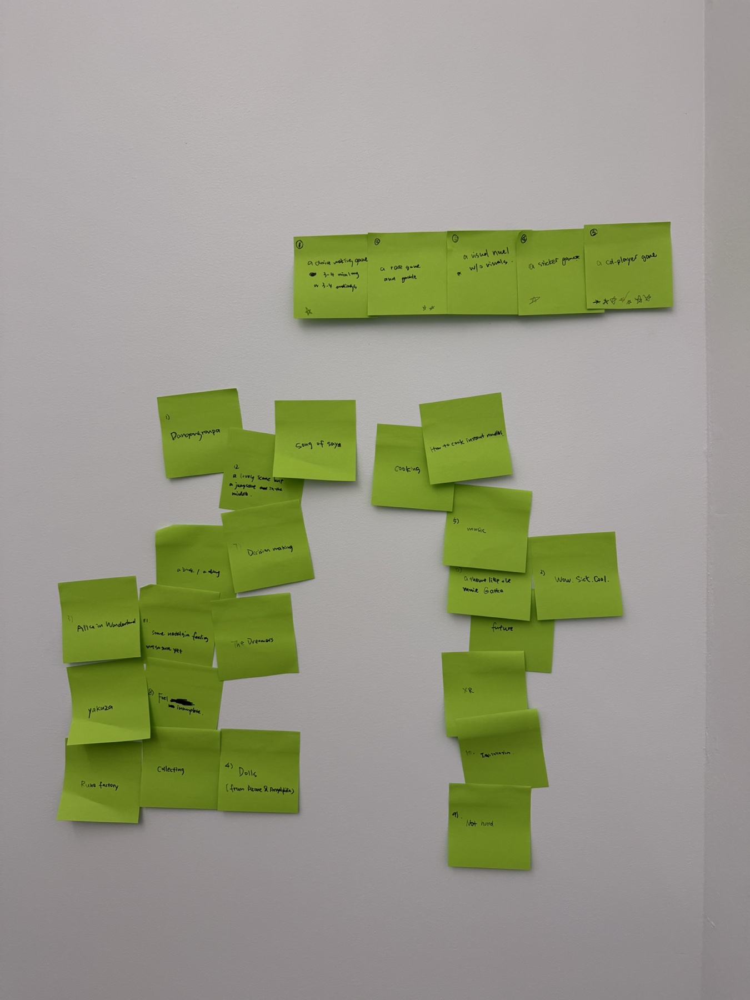
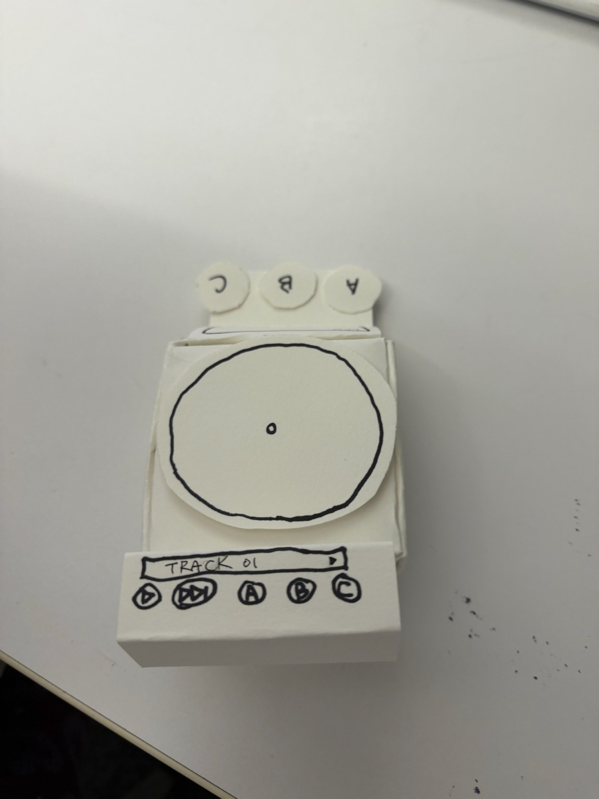
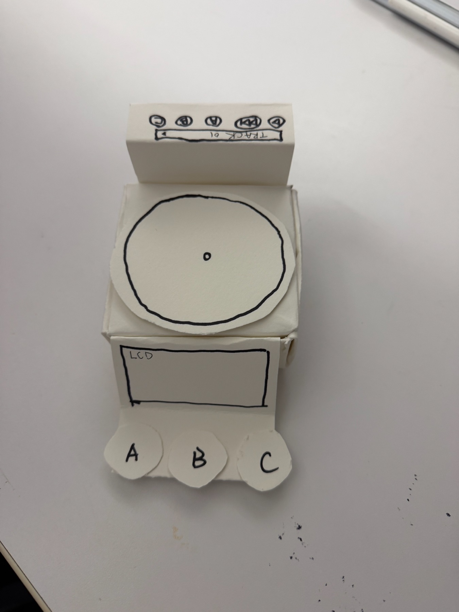
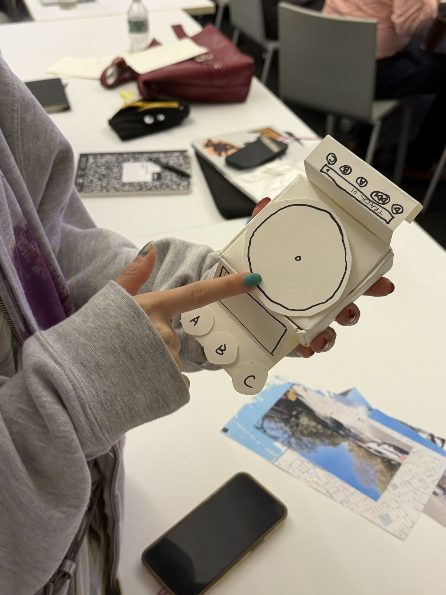
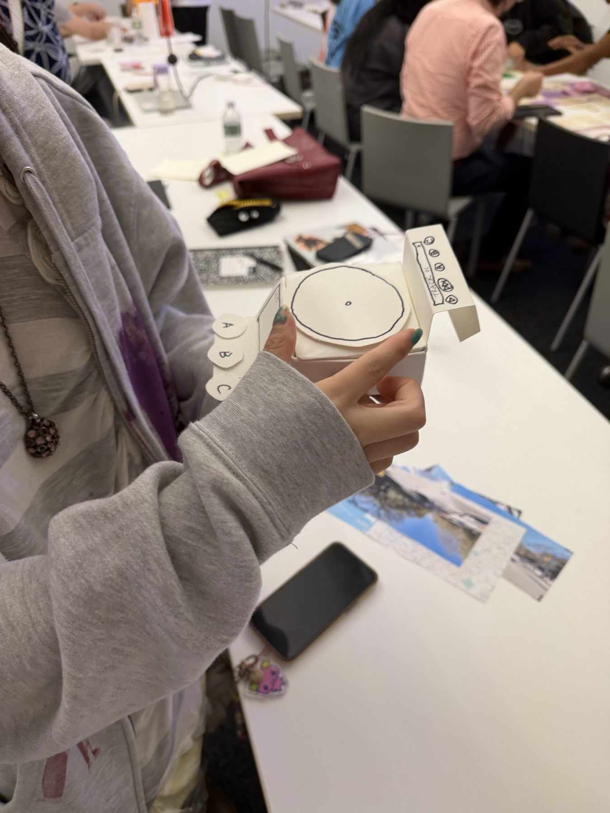

Week 1
A paper prototype brainstorm
- A CD player game
- A choice-making game — a bunch of cards with choices on them that lead to different endings

THESIS ARCHIVE / 2026
Select a folder to open an entry.
Week 1

Week 2
My project is called PET PLAYER. It is a cooperative game designed for a human and a dog to play together as two different players.
The main idea is that humans and dogs should not be forced to use the same interface. The human side has a CD player, an LCD screen, and game controls, because humans can understand instructions, tracks, and abstract game rules. The dog side only has large interaction pads with light and sound feedback, so the dog can interact through touching, approaching, or choosing between different zones.
The game is structured like different tracks on a CD. In each track, the dog creates a signal by interacting with one of the pads, and the human has to observe, remember, or respond to the dog's action. As they progress, their actions gradually build a shared sound or musical track.
The goal is not to train the dog to obey the human. I want to explore what happens when the human also has to pay attention to the dog's choices and treat the dog as Player Two.




How might I make a game that is genuinely fun?
I like making things that I personally find interesting or funny, even if they might seem a little meaningless or absurd.
For example, I once turned one of my friends into the main character of a dating sim just to surprise him. In my chicken game, I realized that the funniest part was not really raising the chicken or even the twist at the end. It was the moment when I was wearing the headset, physically picking up the chicken, and showing it to my friends.
I think a game can be fun because of one specific moment. Sometimes the most memorable part is not the main mechanic or the message, but a strange, silly, or seemingly pointless interaction that unexpectedly becomes meaningful.
Most of my previous projects have been designed from a human point of view, but in my first prototype, I started thinking about the dog as the player.
I find this shift in perspective really interesting. I also often imagine what it would feel like to be a dog, a bird, a cat, or even something completely fictional, like a dragon or a god.
I think changing perspective can create new kinds of interaction and help me imagine different ways of experiencing a game.
I am especially interested in experiences that combine virtual and physical elements.
I feel that when digital feedback is connected to real objects, movement, sound, or physical interaction, the experience can become more immersive and memorable.
Honestly, I still like the idea of making whatever I feel curious about at the moment.
I once made a Tamagotchi-like game using an M5Stick and added real physical feedback to it. Looking back, I realized that I actually make a lot of pet-like or character-based games.
I have created several different kinds of virtual pets, including a girl who smokes, a desktop pet, and other small interactive characters. I seem to be naturally drawn to designing things that feel alive, responsive, or emotionally present.
I am interested in a kind of dry or dark humor, mixed with a retro feeling.
I like experiences that can feel playful, strange, nostalgic, or slightly uncomfortable at the same time.
I am inspired by games from around the 2000s, retro digital aesthetics, virtual pets, strange game mechanics, and social issues.
I am especially interested in projects that look playful or nostalgic on the surface but can also connect to something more serious underneath.
Week 3
This folder is ready for the next entry.
Week 4
This folder is ready for the next entry.
Week 5
This folder is ready for the next entry.